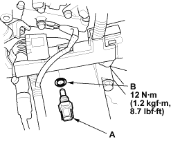
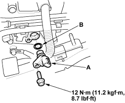

- Remove the air cleaner (see page 11-126).
- Disconnect the ECT sensor 2P connector.
- Remove the ECT sensor (A).

- Install the part in the reverse order of removal with a new O-ring (B).

- Remove the air cleaner (see page 11-126).
- Disconnect the TDC sensor 3P connector.
- Remove the TDC sensor (A).

- Install the part in the reverse order of removal with a new O-ring (B).